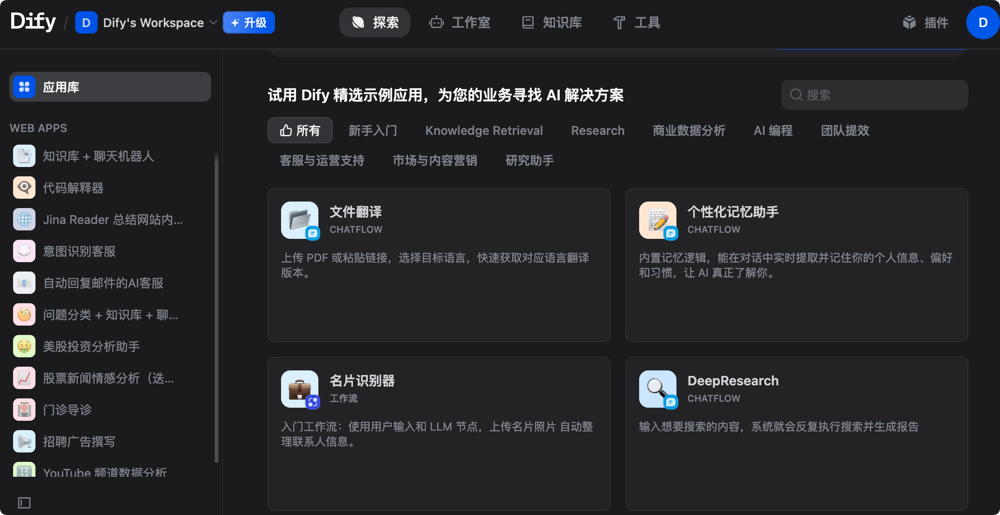
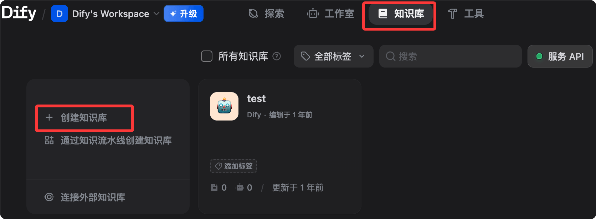

Tutorial de introducción a Dify
Dify (Do It For You) es la plataforma de desarrollo de aplicaciones LLM de código abierto más popular en la actualidad, diseñada específicamente para crear aplicaciones de IA generativa impulsadas por grandes modelos de lenguaje (LLM).
Dify integra la orquestación de flujos de trabajo de IA, bases de conocimiento RAG, el framework de Agent, la gestión de modelos y la observabilidad en una plataforma visual, lo que te permite pasar rápidamente del prototipo a la producción sin necesidad de construir una infraestructura LLM desde cero.
Dify simplifica el proceso de creación de aplicaciones de IA al integrar la tubería RAG, flujos de trabajo de IA, herramientas de observabilidad y gestión de modelos.
Si LangChain esla fábrica de piezas de aplicaciones de IA(flexible, pero requiere mucho código escrito a mano), entonces Dify esel IDE visual para aplicaciones de IA—todos los componentes están listos, solo arrastra, conecta y funciona.

Comparación con otras herramientas
A continuación se muestra la comparación entre Dify, LangChain y n8n en dimensiones clave.
| Dimensión | Dify | LangChain | n8n |
|---|---|---|---|
| Usuarios principales | Desarrolladores + Product Managers | Desarrolladores | Operaciones / Automatización |
| Requisitos de programación | Low-code / No-code | Requiere escribir Python/JS | Low-code |
| RAG integrado | Completamente integrado | Requiere ensamblaje manual | Limitado |
| Framework de Agent | Integrado | Integrado | Limitado |
| Observabilidad | Integrada | Requiere terceros | Limitada |
| Autohospedaje | Totalmente compatible | Compatible | Compatible |
| Licencia | Apache 2.0 | MIT | Fair-code |
El intuitivo estudio de orquestación visual de Dify lo convierte en la opción ideal para startups y empresas que necesitan crear aplicaciones de IA funcionales rápidamente.
LangChain, por otro lado, es más adecuado para aplicaciones complejas a nivel empresarial que requieren integraciones personalizadas y una participación profunda de los desarrolladores.
¿Quién usa Dify?
Desde la biomedicina hasta la industria automotriz, Dify ofrece soluciones confiables para todo tipo de empresas.
Volvo Cars utiliza Dify en la navegación estratégica de vanguardia en IA para validar ideas rápidamente.
Los usuarios valoran muy positivamente que Dify democratiza el desarrollo de agentes de IA, combinando potentes capacidades de IA/ML en una plataforma no-code.
Conceptos clave
Antes de empezar a operar, conozcamos los conceptos básicos de Dify:
| Concepto | Descripción |
|---|---|
| Aplicación (App) | Unidad básica de implementación en Dify. Cada aplicación corresponde a una función de IA independiente, con su propio System Prompt, base de conocimiento asociada, configuración de herramientas y API Key. |
| Base de conocimiento (Knowledge Base) | La base de conocimiento es tu propia colección de datos, que se puede integrar en aplicaciones de IA. Permite que el LLM utilice tus datos propietarios como fuente adicional de verdad al responder, garantizando respuestas más precisas, relevantes y con menos alucinaciones. |
| RAG (Generación Aumentada por Recuperación) | Cuando un usuario hace una pregunta, el sistema primero recupera la información más relevante de la base de conocimiento (Retrieval), luego combina los resultados con la pregunta original del usuario y se los envía al LLM (Augmented), y el LLM genera una respuesta más precisa basada en este contexto (Generation). |
| Workflow (flujo de trabajo) | Construye y prueba potentes flujos de trabajo de IA en un lienzo visual, definiendo la lógica de procesamiento de IA en múltiples pasos mediante arrastrar y soltar nodos y conectarlos. |
| Agent (agente inteligente) | Puedes definir un Agent basado en LLM Function Calling o ReAct, y añadirle herramientas preconstruidas o personalizadas. Dify ofrece más de 50 herramientas integradas para AI Agent, como Google Search, DALL E, Stable Diffusion y WolframAlpha. |
| Nodo (Node) | Unidad básica del flujo de trabajo; cada nodo ejecuta una operación específica: razonamiento LLM, recuperación de conocimiento, ejecución de código, solicitudes HTTP, ramas condicionales, etc. |
Instalación y puesta en marcha
Cuatro métodos de instalación, desde empezar en segundos hasta el despliegue de clústeres de alta disponibilidad.
Opción 1: Dify Cloud (la más rápida, empieza en 0 segundos)
Visitacloud.dify.ai, regístrate y podrás usarlo de inmediato.
El plan Sandbox gratuito incluye 200 mensajes al mes y 5 aplicaciones, sin necesidad de configurar ningún entorno.
Ideal para probar rápidamente, proyectos personales y prototipos de prueba.

Opción 2: Autohospedaje con Docker Compose (recomendado para producción)
Adecuado para usuarios con experiencia técnica, que quieren tener control total sobre los datos y el entorno de despliegue.
Requisitos del sistema
| Recurso | Requisito mínimo | Configuración recomendada |
|---|---|---|
| CPU | 2 núcleos | 4 núcleos |
| Memoria | 4 GB | 8 GB |
| Disco | 20 GB | 50 GB+ |
| Docker | Engine 20.10+ | Última versión |
| Docker Compose | v2.2+ | Última versión |
Pasos de instalación
Primer paso: clonar el repositorio
Clona el repositorio de Dify localmente:
git clone https://github.com/langgenius/dify.git cd dify
Segundo paso: entra en el directorio docker y copia la configuración del entorno
cd docker # 从模板复制环境配置文件 cp .env.example .env
Tercer paso (importante): configurar SECRET_KEY
Desde v1.14.1, el despliegue con Docker ya no depende de una clave pública por defecto. Cuando SECRET_KEY está vacío, la API genera y persiste automáticamente una clave de ejecución. Se recomienda configurarlo explícitamente en el archivo .env.
# 生成一个安全的随机密钥 openssl rand -base64 42
Edita el archivo .env, encuentra SECRET_KEY y establécelo como la cadena aleatoria generada anteriormente:
SECRET_KEY=your-very-long-random-secret-key-here
Cuarto paso: iniciar el servicio
# 启动所有 Dify 服务（首次会拉取镜像，约需 3-10 分钟） docker compose up -d
Quinto paso: acceder e inicializar
Accede a http://localhost/install desde el navegador y completa el registro de la cuenta de administrador.
Sexto paso: verificar el estado del servicio
# 查看所有容器状态，全部为 healthy 即表示运行正常 docker compose ps
Si todos los contenedores (api, worker, web, db, redis, weaviate, nginx, etc.) tienen estado healthy, significa que el servicio funciona correctamente.
Detener y reiniciar
# 停止所有服务（数据保留在 Docker volumes 中） docker compose down # 重新启动所有服务 docker compose up -d
Actualizar a una nueva versión
# 进入 docker 目录 cd dify/docker # 拉取最新代码 git pull origin main # 拉取新镜像 docker compose pull # 重新启动 docker compose up -d
Los datos se persisten en volúmenes de Docker; la actualización no afecta a las aplicaciones, bases de conocimiento ni historiales de conversación existentes. Antes de una actualización de versión mayor, se recomienda hacer una copia de seguridad de la base de datos PostgreSQL.
Opción 3: Implementación con un clic en AWS Marketplace
Dirigido a startups y pequeñas empresas que operan en AWS: puedes desplegar Dify Premium desde AWS Marketplace con un clic en tu propia VPC de AWS, y también admite logotipo y marca personalizados.
Opción 4: Implementación en Kubernetes (alta disponibilidad)
Para escenarios que requieren configuración de alta disponibilidad, la comunidad proporciona Helm Charts y archivos YAML para desplegar Dify en un clúster de Kubernetes.
# 添加 Dify Helm 仓库 helm repo add dify https://langgenius.github.io/dify-helm # 使用自定义 values.yaml 安装 helm install dify dify/dify -f values.yaml
Configuración del proveedor de modelos
Una vez completada la instalación, el primer paso es conectar tu modelo de IA.
Ruta de operación
Después de iniciar sesión en Dify, haz clic en el avatar en la esquina superior derecha, entra en Settings (Configuración) y selecciona Model Provider (Proveedor de modelos).

Por ejemplo, podemos instalar el proveedor de modelos DeepSeek y luego configurar la API key:

Configuración de proveedores principales
Anthropic (serie Claude):
Provider: Anthropic API Key: sk-ant-xxxxxxxx（从 console.anthropic.com 获取） 推荐模型：claude-sonnet-4-6（综合性能最佳）
OpenAI：
Provider: OpenAI API Key: sk-xxxxxxxx（从 platform.openai.com 获取） 推荐模型：gpt-4o（性价比高）
Google (serie Gemini):
Provider: Google API Key: xxxxxxxx（从 aistudio.google.com 获取） 推荐模型：gemini-2.0-flash（速度快，适合大量请求）
OpenRouter (una clave para acceder a más de 300 modelos):
Provider: OpenRouter API Key: sk-or-xxxxxxxx（从 openrouter.ai 获取） Base URL: https://openrouter.ai/api/v1
Modelos locales (Ollama):
Provider: Ollama Base URL: http://host.docker.internal:11434 # Docker 内访问宿主机 （先在宿主机运行：ollama pull llama3.3）
Configurar el modelo de embedding (necesario para la base de conocimiento)
La vectorización de la base de conocimiento requiere un modelo de embeddings. Estas son las opciones recomendadas:
| Modelo | Características | Casos de uso |
|---|---|---|
| OpenAI text-embedding-3-small | Económico y con buenos resultados | Escenarios generales |
| Zhipu AI embedding-3 | Excelente soporte para chino | Contenido principalmente en chino |
| nomic-embed-text local (Ollama) | Totalmente offline | Requisitos elevados de seguridad de datos |
Verificar que el modelo esté disponible
Vuelve a Settings, busca el proveedor configurado y haz clic en el botón Test junto al nombre del modelo. Si aparece una marca de verificación verde, la configuración se ha realizado correctamente.
Explicación detallada de los cinco tipos de aplicación
En la página de inicio de Dify, haz clic en Create App (Crear aplicación). Verás cinco tipos, cada uno correspondiente a diferentes casos de uso.

Al hacer clic en crear una aplicación en blanco, puedes ver los cinco tipos de aplicación:

1. Chatbot (asistente de chat)
Aplicación estándar de conversación de múltiples turnos con memoria de sesión persistente.
| Atributo | Descripción |
|---|---|
| Casos de uso adecuados | Bots de atención al cliente, asistentes personales, preguntas frecuentes (FAQ) |
| Características principales | Memoria de conversación integrada (con estrategia de memoria configurable), posibilidad de adjuntar base de conocimiento (habilitar RAG), soporte para salida en streaming y publicación con un clic como código de inserción web |
2. Text Generator (generador de texto)
De entrada única a salida única, sin conservar el historial de conversación.
| Atributo | Descripción |
|---|---|
| Casos de uso adecuados | Reescritura de artículos, generación de resúmenes, redacción SEO, borradores de correos electrónicos |
| Características principales | Estructura clara (formulario de entrada + texto de salida), adecuado para procesamiento por lotes, soporta marcadores de posición de variables (como {{product_name}}) |
3. Agent (agente inteligente)
IA capaz de invocar herramientas de forma proactiva, planificar de manera autónoma y ejecutar tareas de múltiples pasos.
| Atributo | Descripción |
|---|---|
| Casos de uso adecuados | Consulta y análisis de datos, búsqueda y resumen, ejecución de código |
| Características principales | Soporta dos modos de razonamiento: Function Calling y ReAct; incluye más de 50 herramientas integradas (búsqueda, generación de imágenes, intérprete de código, etc.); admite herramientas API personalizadas; el proceso de invocación de herramientas es visible para el usuario |
4. Chatflow (flujo de conversación)
Añade capacidad de conversación de múltiples turnos sobre la base de Workflow, combinando orquestación de flujos y contexto de conversación.
| Atributo | Descripción |
|---|---|
| Casos de uso adecuados | Flujos complejos de atención al cliente, bots de conversación que requieren decisiones en múltiples pasos |
| Características principales | Tiene la capacidad de orquestación de nodos de Workflow y conserva la memoria de múltiples turnos de la conversación, pudiendo activar flujos automatizados durante el diálogo |
5. Workflow (flujo de trabajo)
Proceso automatizado puro de múltiples pasos, sin interfaz de conversación; se activa mediante API o se ejecuta manualmente.
| Atributo | Descripción |
|---|---|
| Casos de uso adecuados | Procesamiento de datos por lotes, tareas automatizadas programadas, canalizaciones de procesamiento de IA en el backend |
| Características principales | Construcción y prueba de flujos de trabajo de IA en un lienzo visual; soporta ramas paralelas, bucles y condiciones; admite Human-in-the-Loop (nodo Human Input); los resultados de salida pueden conectarse con otros sistemas |
Guía de selección
Decide rápidamente qué tipo de aplicación usar según tus necesidades:
需要多轮对话？
├─ 是 → 需要复杂流程逻辑？
│ ├─ 是 → Chatflow
│ └─ 否 → Chatbot 或 Agent（需要工具调用时选 Agent）
└─ 否 → 单次输入输出？
├─ 是 → Text Generator
└─ 需要多步骤自动化 → Workflow
Base de conocimiento (RAG): haz que la IA responda con tus datos privados
La base de conocimiento es una de las funciones más potentes de Dify y el núcleo de la mayoría de las aplicaciones empresariales.
Crear una base de conocimiento
- En la barra de navegación selecciona Knowledge (Base de conocimiento) y haz clic en Create Knowledge (Crear base de conocimiento)
- Ponle un nombre a la base de conocimiento, como «Manual de producto» o «Documento de políticas internas»
- Elegir el método de creación

Método 1: subir archivos (el más común)
Dify acepta archivos en formato PDF, Word (.docx), Markdown (.md), texto plano (.txt), CSV y HTML.
Se recomienda usar Markdown o texto plano, ya que se analizan de forma más fiable.
Los PDF con maquetación compleja o versiones escaneadas pueden requerir un preprocesamiento; se recomienda extraer el texto con una herramienta OCR antes de subirlos.
Método 2: Knowledge Pipeline (nivel empresarial)
Knowledge Pipeline es un sistema de orquestación visual basado en nodos, diseñado específicamente para el procesamiento de ingesta de documentos.
Resuelve los tres grandes problemas del RAG tradicional: fuentes de datos dispersas, pérdida de información durante el análisis (tablas y fórmulas descartadas) y procesos de caja negra (difíciles de diagnosticar en caso de fallo).
Método 3: API de base de conocimiento externa
Sincroniza una base de conocimiento externa existente mediante API, sin necesidad de migración de datos.
Estrategia de fragmentación de documentos
Tras la subida, Dify realiza automáticamente la fragmentación del texto (chunking). Los parámetros clave se explican a continuación:
| Parámetro | Descripción | Valor recomendado |
|---|---|---|
| Tamaño del fragmento | Número de tokens por chunk | 500-1000 (chino) |
| Superposición de fragmentos | Número de tokens superpuestos entre chunks adyacentes | 50-100 |
| Separador | Cómo dividir (párrafos / oraciones) | Párrafos |
Para contenido en chino, se recomienda fijar el tamaño del fragmento en torno a 500 tokens. Si es demasiado largo, la recuperación no será lo bastante precisa; si es demasiado corto, se perderá contexto.
Modos de indexación
| Modo | Descripción | Coste |
|---|---|---|
| Alta calidad (por defecto) | Utiliza el modelo de embeddings para generar vectores; es el que mejor resultados ofrece | Consume API de embeddings |
| Modo económico | Índice invertido (coincidencia por palabras clave), sin necesidad de embeddings | Gratuito |
Configuración de recuperación
Entra en la base de conocimiento, selecciona Settings y configura los parámetros de recuperación:
| Método de recuperación | Descripción | Escenarios de aplicación |
|---|---|---|
| Búsqueda vectorial | Coincidencia por similitud semántica | Consultas relacionadas por significado |
| Búsqueda de texto completo | Coincidencia de palabras clave | Búsqueda de términos exactos |
| Búsqueda híbrida (recomendada) | Combina ambas y usa un modelo de reordenamiento para mejorar la precisión | Escenario general |
Se recomienda establecer el umbral de similitud entre 0.5 y 0.7.
Un umbral de similitud demasiado alto puede provocar que no se devuelvan resultados; demasiado bajo devolverá contenido irrelevante. Se recomienda comenzar a probar con 0.6 y ajustarlo según los resultados.
Probar el efecto de la recuperación
En la base de conocimiento, haz clic en Retrieval Testing (Prueba de recuperación), ingresa una pregunta de prueba y revisa directamente los Chunks devueltos para verificar la calidad de la recuperación, sin necesidad de iniciar una conversación real.
Vincular la base de conocimiento a la aplicación
En la página de edición de la aplicación, selecciona Context (Contexto), haz clic en Add (Agregar), elige la base de conocimiento creada y guarda.
Una vez vinculada, cada conversación de la aplicación buscará primero en la base de conocimiento y luego responderá.
Workflow: orquestación visual de tareas de varios pasos
Define la lógica de procesamiento de IA de varios pasos arrastrando nodos y conectándolos.
Entrar al editor de Workflow
Al crear una aplicación, selecciona Workflow, o en una aplicación Workflow existente, haz clic en Edit (Editar) para ingresar al lienzo.

Principales tipos de nodos
A continuación se muestran los nodos más utilizados en el editor de Workflow y sus funciones:
| Nodo | Función | Uso típico |
|---|---|---|
| Start | Entrada del flujo, define las variables de entrada | Recibe la entrada del usuario o parámetros externos |
| LLM | Llamar a un modelo de lenguaje | Generación, análisis y traducción de texto |
| Knowledge Retrieval | Recuperar de la base de conocimiento | Escenario RAG |
| IF/ELSE | Bifurcación condicional | Enruta por diferentes rutas de procesamiento según el contenido |
| Code | Ejecutar código Python o JS | Transformación de datos, procesamiento de formatos y cálculos |
| HTTP Request | Llamar a API externas | Consultar bases de datos, enviar notificaciones |
| Template | Renderizado de plantillas de variables | Combina la salida de varios nodos |
| Variable Assigner | Establecer/actualizar variables | Transmitir datos entre nodos |
| Iteration | Procesamiento en bucle de listas | Procesamiento por lotes de múltiples datos |
| Agent | Nodo Agent incorporado | Permite que un paso del flujo de trabajo tenga capacidad de razonamiento autónomo |
| Human Input | Pausar para esperar revisión humana | Punto de decisión clave para la colaboración humano-máquina |
| End | Salida del flujo, define las salidas | Devuelve el resultado final |

Transferencia de variables entre nodos
La salida de cada nodo puede ser referenciada por los nodos posteriores; la sintaxis es {{节点名.输出变量名}}.
A continuación se muestra un ejemplo de transmisión de variables en un flujo de trabajo típico de preguntas y respuestas RAG:
Start 节点输出 user_query
↓
Knowledge Retrieval 节点：
输入：{{Start.user_query}}
输出：result（检索结果）
↓
LLM 节点：
System Prompt：你是一个客服助理，根据以下资料回答问题
User：用户问题：{{Start.user_query}}
参考资料：{{Knowledge Retrieval.result}}
↓
End 节点：
返回：{{LLM.text}}
Nodo Human Input (HITL)
El nodo Human Input es una actualización importante que permite que el flujo de trabajo pause su ejecución en puntos de decisión clave.
Este nodo genera una interfaz de UI para que el personal revise y modifique variables (por ejemplo, editar borradores o corregir datos), y luego decide la ruta posterior según botones personalizados (como "Aprobar", "Rechazar" o "Escalar").
Esto resuelve el dilema binario de los flujos de trabajo anteriores de "totalmente automatizados o totalmente manuales", permitiendo que los escenarios de alto riesgo (revisión de contratos, asesoramiento médico, decisiones financieras) también puedan usar IA automatizada.
Depurar el flujo de trabajo
En la esquina superior derecha del lienzo, haz clic en Run (Ejecutar), ingresa parámetros de prueba y observa la entrada/salida y el tiempo de ejecución de cada nodo.
Junto al nodo aparecerá una marca verde (éxito) o roja (fallo); haz clic para ver el registro detallado de ejecución.
Escenario práctico 1: Robot de preguntas y respuestas basado en el conocimiento interno de la empresa
Usa Dify para crear un chatbot que pueda responder con precisión preguntas sobre documentos internos, con respuestas que incluyan referencias de fuentes.
Contexto del negocio
La empresa tiene una gran cantidad de documentos internos (políticas de RRHH, manuales de producto, wikis técnicas). Los empleados a menudo necesitan buscar información, pero los documentos están dispersos y la búsqueda es difícil.
Paso 1: Preparar la base de conocimiento
- Organiza los documentos: exporta las políticas de RRHH (PDF), los manuales de producto (Word) y la wiki técnica (Markdown) para usarlos.
- En Knowledge, selecciona Create Knowledge y nómbrala "Base de conocimiento interna de la empresa".
- Sube los archivos y selecciona el modo de indexación de alta calidad.
- Espera a que se complete la vectorización (se muestra mediante la barra de progreso).
Consejos para optimizar la calidad de los documentos: elimina información irrelevante, encabezados, pies de página y caracteres especiales. Usa títulos claros y párrafos cortos. Si un documento abarca varios temas diferentes, considera dividirlo en archivos independientes.
Paso 2: Crear una aplicación Chatbot
- Haz clic en Create App, selecciona Chatbot y nómbrala "Asistente interno".
- Selecciona el modelo (se recomienda Claude Sonnet 4.6 o GPT-4o).
- Escribe el System Prompt

你是公司内部知识助手，专门帮助员工查找内部文档信息。 行为准则： - 只根据提供的知识库内容回答，不要编造信息 - 回答时注明来源文档名称 - 如果知识库中没有相关信息，直接说"我在文档中没有找到相关信息"，并建议联系对应部门 - 使用简洁、专业的语言 - 不讨论公司机密以外的话题
- En Context, haz clic en Add y selecciona "Base de conocimiento interna de la empresa".
- Configura los parámetros de recuperación: búsqueda híbrida, umbral de similitud 0.6, devolver los Top 5 fragmentos.
Paso 3: Pruebas y optimización
Prueba con preguntas reales. A continuación se muestran los casos de prueba recomendados:
测试问题示例： "年假怎么申请？" → 应该从 HR 政策文档返回正确步骤 "产品 A 的定价是多少？" → 应该从产品手册返回准确价格 "如何配置 VPN？" → 应该从技术 Wiki 返回步骤 "CEO 是谁？" → 如果文档中没有，应该诚实说不知道
Operaciones de ajuste comunes
| Problema | Solución |
|---|---|
| Respuesta imprecisa | Reduce el umbral de similitud (por ejemplo, a 0.5) y aumenta la cantidad de Chunks devueltos. |
| Respuesta irrelevante | Aumenta el umbral (por ejemplo, a 0.7) y verifica si la división de documentos en fragmentos es razonable. |
| Respuesta incompleta | Aumenta el tamaño de los fragmentos para que cada Chunk contenga párrafos más completos. |
Paso 4: Publicación e integración
Publicar como aplicación web: en la página de la aplicación, selecciona Overview, haz clic en Embedded, copia el código de inserción y pégalo en la wiki interna o en una página de la intranet.
Publicar como API: en la página de la aplicación, selecciona API Reference, copia la API Key, ejemplo de llamada:
# 调用聊天 API，向知识问答机器人发送问题
curl -X POST 'https://api.dify.ai/v1/chat-messages' \
-H 'Authorization: Bearer app-xxxxxxxx' \
-H 'Content-Type: application/json' \
-d '{
"inputs": {},
"query": "年假怎么申请？",
"response_mode": "blocking",
"user": "employee-001"
}'
Escenario práctico 2: Tubería de generación de contenido automatizada
Utiliza Workflow para generar en paralelo contenido de marketing para diferentes canales.
Contexto del negocio
El equipo de marketing necesita transformar en masa las notas de actualización del producto (lenguaje técnico) en contenido para diferentes canales: publicaciones de WeChat, blogs técnicos y guiones de videos cortos.
Diseño del flujo de trabajo
Start（输入：更新日志文本） ↓ 并行分支 ├─→ LLM-1：生成微信推文（轻松活泼，500字，含表情符号） ├─→ LLM-2：生成技术博客（专业详细，1500字，含代码示例） └─→ LLM-3：生成短视频脚本（口语化，300字，分镜头格式） ↓ 合并 End（输出：三份内容）
Pasos concretos de construcción
Primer paso: crea una aplicación Workflow y nómbrala "Canal de generación de contenido".
Segundo paso: configura el nodo Start y agrega las variables de entrada:
| Nombre de variable | Tipo | Descripción |
|---|---|---|
| update_content | Tipo de texto | Texto original de las notas de actualización del producto |
| product_name | Tipo de texto | Nombre del producto |
| version | Tipo de texto | Número de versión |
Tercer paso: agrega tres nodos LLM (en paralelo).
Conecta los tres nodos LLM al nodo Start; Dify los ejecutará automáticamente en paralelo.
Ejemplo de Prompt para LLM-1 (publicación de WeChat):
你是一位擅长社交媒体写作的内容创作者。
请将以下 {{product_name}} v{{version}} 的更新日志改写成微信公众号推文：
- 字数：400-600字
- 语气：轻松活泼，贴近用户
- 结构：开头吸引眼球，中间介绍亮点，结尾引导互动
- 适当使用 emoji
- 不要使用技术术语，用用户能理解的语言
更新日志原文：
{{Start.update_content}}
LLM-2 (blog técnico) y LLM-3 (guion de video corto) se configuran de manera similar; solo hay que ajustar el Prompt y el modelo.
Cuarto paso: agrega el nodo End y configura las variables de salida:
wechat_post：引用 {{LLM-1.text}}
tech_blog：引用 {{LLM-2.text}}
video_script：引用 {{LLM-3.text}}
Quinto paso: integra con herramientas internas mediante la API.
Ejemplo
def generate_content(update_content: str, product_name: str, version: str):
"""Llama a la API de Dify Workflow para generar de forma masiva contenido en múltiples versiones"""
# Dirección de la API: reemplaza api.dify.ai por el dominio de tu instancia de Dify
url = "https://api.dify.ai/v1/workflows/run"
# Encabezado de solicitud: reemplázalo por la API Key de tu aplicación
headers = {
"Authorization": "Bearer app-xxxxxxxx", # Obligatorio: API Key de la aplicación
"Content-Type": "application/json"
}
# Cuerpo de la solicitud: pasa las tres variables de entrada definidas en el nodo Start
payload = {
"inputs": {
"update_content": update_content, # Texto original de las notas de actualización
"product_name": product_name, # Nombre del producto
"version": version # Número de versión
},
"response_mode": "blocking", # Modo de bloqueo, esperar el resultado completo
"user": "content-team" # Identificador de usuario, para seguimiento de registros
}
response = requests.post(url, headers=headers, json=payload)
# Extrae el campo outputs de la respuesta; contiene los resultados generados por los tres nodos LLM
return response.json()["data"]["outputs"]
Escenario práctico 3: Agente de soporte al cliente (con Human-in-the-Loop)
Construye un sistema inteligente de gestión de tickets de atención al cliente: la IA procesa automáticamente los problemas estándar, y los problemas complejos se transfieren a personal humano con un análisis previo.
Contexto del negocio
La plataforma de comercio electrónico recibe más de 500 tickets de soporte al día. La mayoría son problemas estándar (consultas de logística, políticas de devolución), pero alrededor del 20% requiere manejo humano (quejas complejas, reembolsos de gran importe).
Diseño del flujo de trabajo
Start（接收用户工单：问题类型 + 内容 + 订单号）
↓
LLM-分类：判断问题类型（standard / complex）
↓
IF/ELSE：问题类型是否为 standard？
├─ standard →
│ Knowledge Retrieval（从客服知识库检索）
│ ↓
│ LLM-回复：生成标准回答
│ ↓
│ End（直接回复用户）
│
└─ complex →
LLM-预分析：生成问题摘要和建议处理方案
↓
Human Input（人工审核，可编辑 AI 建议，选择"批准"/"修改"/"升级"）
↓
End（发送经过人工确认的回复）
Configuración de nodos clave
Nodo LLM de clasificación (salida JSON estructurada):
Ejemplo
"system": "Eres un experto en clasificación de tickets de atención al cliente. Analiza el siguiente ticket y genera el resultado de clasificación en formato JSON.",
"output_schema": {
"category": standard o complex,
"reason": Motivo de clasificación (una frase),
"priority": "low / medium / high"
},
"criteria": {
"standard": Consultas de logística, política de devoluciones, reembolsos normales (<500 yuanes), problemas de cuenta,
"complex": Reembolsos de gran importe (>500 yuanes), quejas, disputas, problemas de calidad del producto
}
}
Configuración del nodo Human Input:
| Elemento de configuración | Descripción |
|---|---|
| Contenido mostrado | Resultado del preanálisis de IA + borrador de respuesta sugerido |
| Campo editable | Contenido de respuesta, prioridad |
| Botón personalizado | Aprobar (responder según la sugerencia de IA), aprobar después de modificar (responder tras edición manual), escalar (derivar al equipo de tratamiento especializado) |
Resultados esperados
| Tipo de ticket | Método de gestión | Mejora de eficacia |
|---|---|---|
| Problemas estándar (aprox. 80%) | Procesamiento totalmente automático con IA | Tiempo de respuesta reducido de 4 horas a 30 segundos |
| Problemas complejos (aprox. 20%) | IA asiste al personal, proporcionando análisis y borradores | El tiempo de procesamiento manual se reduce en un 60% |
| En general | - | La eficiencia en la gestión de tickets mejora aproximadamente 3 veces |
Publicación: API, incrustación web y servidor MCP
Publique aplicaciones Dify en sistemas externos; admite tres métodos: llamadas API, incrustación web y servidor MCP.
Publicar como API
Cada aplicación Dify tiene automáticamente una API REST. Seleccione API Access en la página de la aplicación para obtenerla.
Ejemplo de llamada API de aplicación de chat:
# 调用聊天 API（流式返回模式）
curl -X POST 'https://api.dify.ai/v1/chat-messages' \
-H 'Authorization: Bearer {API_KEY}' \
-H 'Content-Type: application/json' \
-d '{
"inputs": {},
"query": "你好",
"response_mode": "streaming",
"conversation_id": "",
"user": "user-001"
}'
Ejemplo de llamada API de aplicación de flujo de trabajo:
# 调用 Workflow API（阻塞模式）
curl -X POST 'https://api.dify.ai/v1/workflows/run' \
-H 'Authorization: Bearer {API_KEY}' \
-H 'Content-Type: application/json' \
-d '{
"inputs": {"your_variable": "your_value"},
"response_mode": "blocking",
"user": "user-001"
}'
El formato de la API Key comienza con app-. Asegúrese de pasarla en el encabezado de la solicitud como Authorization: Bearer, no como parámetro de consulta. Cada API Key corresponde únicamente a una aplicación concreta; las claves de diferentes aplicaciones no son intercambiables.
Incrustación web
En la página de la aplicación, seleccione Overview, haga clic en Embedded; se ofrecen tres métodos de incrustación:
Método 1: Incrustación con iframe
Ejemplo
<iframe
src="https://udify.app/chatbot/xxxxxxxx"
style="width: 100%; height: 100%; min-height: 700px"
frameborder="0"
allow="microphone">
</iframe>
Método 2: Botón de burbuja (flotando en la esquina inferior derecha de la página web)
Ejemplo
<script>
window.difyChatbotConfig = { token: 'xxxxxxxx' }
</script>
<script
src="https://udify.app/embed.min.js"
id="xxxxxxxx"
defer>
</script>
Método 3: Página web a pantalla completa, acceso independiente; comparta directamente el enlace https://udify.app/chat/xxxxxxxx.
Publicar como servidor MCP
Dify admite publicar flujos de trabajo o agentes construidos como servidores MCP estándar, con soporte para modos de preautorización y sin autenticación.
Esto significa que la aplicación de preguntas y respuestas sobre base de conocimiento que crees en Dify puede convertirse directamente en un nodo de herramienta para herramientas de programación con IA como Claude Code, Cursor, omp, integrándose sin problemas en el flujo de trabajo de desarrollo.
Ruta de operación: en la aplicación, seleccione Publish y haga clic en MCP Server.
Observabilidad: monitoreo y optimización continua
Monitoree y optimice continuamente el rendimiento de las aplicaciones de IA mediante registros, anotaciones, estadísticas e integración con plataformas externas.
Ver registros de la aplicación
En la página de la aplicación, seleccione Logs (Registros) para ver la entrada/salida completa de cada conversación, el uso de tokens (estadísticas separadas para entrada y salida), el tiempo de respuesta, el modelo y la información de parámetros.
Anotar conversaciones
En los registros, haga clic en una conversación concreta y luego en el botón de pulgar arriba o pulgar abajo junto a la respuesta para añadir una respuesta ideal como anotación.
Los usos de los datos anotados incluyen: construir conjuntos de datos de ajuste fino mediante anotaciones, identificar áreas de cobertura que faltan en la base de conocimiento y descubrir tipos de problemas que fallan con frecuencia.
Estadísticas de datos de la aplicación
En la página de la aplicación, seleccione Overview y haga clic en Analytics (Análisis de datos) para ver:
| Elemento de estadística | Descripción |
|---|---|
| Tendencia del número de conversaciones | Cambio en el volumen de conversaciones por dimensión diaria/semanal/mensual |
| Consumo promedio de tokens | Media del uso de tokens por conversación |
| Puntuación de satisfacción del usuario | Estadísticas de distribución de pulgar arriba/abajo |
| Número de usuarios activos | Número de usuarios únicos que usan la aplicación |
Integración con plataformas de observación externas
Dify admite plataformas de observación como Opik, Langfuse y Arize Phoenix.
Tomando Langfuse como ejemplo: en Settings, seleccione Monitoring, elija Langfuse, ingrese la Public Key y la Secret Key y guarde. A partir de entonces, la cadena de llamadas de todas las aplicaciones se sincronizará automáticamente a Langfuse, donde podrá ver el seguimiento completo de Spans y el desglose del gasto en tokens.
Ciclo de optimización continua
Se recomienda establecer el siguiente proceso de optimización continua:
部署上线 ↓ 收集对话日志（1-2 周） ↓ 分析差评对话：哪些问题回答得不好？ ↓ 改进知识库（补充文档、调整分块）或优化 Prompt ↓ A/B 测试：对比改进前后的效果 ↓ 再次部署
Costos y planes
Conozca la estructura de costos de Dify Cloud y del autoalojamiento, y elija el plan que mejor se adapte a sus necesidades.
Planes de Dify Cloud
| Plan | Precio mensual | Descripción |
|---|---|---|
| Sandbox | Gratuito | 200 mensajes/mes, 5 aplicaciones, apto para escenarios de prueba |
| Professional | $59/mes | 5,000 mensajes/mes, 50 aplicaciones, admite colaboración en equipo |
| Team | $159/mes | 10,000 mensajes/mes, aplicaciones ilimitadas, soporte prioritario |
| Enterprise | Personalizado | Uso ilimitado, opción de implementación privada, garantía SLA |
Costo del autohospedaje
La versión comunitaria autoalojada es totalmente gratuita y sin ninguna restricción de uso.
Solo necesita pagar el costo de alojamiento del servidor (un VPS de aproximadamente $5-50/mes) y las tarifas de llamadas API de los modelos de IA.
Estimación de costos (autoalojado, 10,000 conversaciones/mes):
| Componente | Estimación de costo |
|---|---|
| VPS (4 núcleos, 8 GB) | $20-40/mes |
| Claude Sonnet 4.6 (aprox. 1K tokens por conversación) | ~$30/mes |
| Embedding（text-embedding-3-small） | ~$2/mes |
| Total | ~$52-72/mes |
En comparación con Dify Cloud Professional ($59/mes, más las tarifas de API del modelo), el autoalojamiento suele ser más económico cuando se usa a gran escala.
Consejos para reducir costos
| Consejo | Descripción |
|---|---|
| Indexar la base de conocimiento en modo económico | Cuando la búsqueda por palabras clave existente sea suficiente, no es necesario vectorizar |
| Elegir el modelo adecuado | Para preguntas y respuestas simples, use GPT-4o-mini o Gemini Flash; para tareas complejas, use el modelo insignia |
| Establecer un límite máximo de tokens | Configure max_tokens en el nodo LLM para evitar llamadas individuales demasiado largas |
| Habilitar caché | Reutilizar automáticamente la respuesta anterior para preguntas similares (Prompt Cache) |
Preguntas frecuentes y resolución de problemas
Incluye métodos de resolución de problemas para cuatro categorías principales: inicio, recuperación de base de conocimiento, llamadas API y flujos de trabajo.
Problemas de inicio
Problema: los servicios no están saludables después de docker compose up -d
Ejemplo
docker compose logs api
# Ver registros del contenedor worker
docker compose logs worker
# Comprobar si la memoria es suficiente (se necesitan al menos 4 GB)
free -h
# Comprobar si los puertos están ocupados (80 o 443)
sudo lsof -i :80
Problema: al acceder a http://localhost se muestra 502 Bad Gateway
Ejemplo
docker compose ps
# Confirmar que api, web y worker estén todos en estado healthy y volver a acceder
Problemas de recuperación de la base de conocimiento
Problema: la base de conocimiento no recupera contenido relevante
Pasos de diagnóstico:
- En la base de conocimiento, haga clic en Retrieval Testing, pruebe la pregunta concreta y confirme si se puede recuperar.
- Si no se recupera: reduzca el umbral de similitud (de 0.6 a 0.3) y pruebe si hay resultados.
- Si aún no hay resultados: confirme que el modelo de embedding esté configurado correctamente y que la indexación de la base de conocimiento esté completa.
- Si hay resultados pero el contenido no es correcto: revise la estrategia de fragmentación de documentos y considere dividir manualmente los archivos grandes.
Problema: el contenido devuelto por RAG no es relevante
Revise el contenido de los chunks recuperados. Si los chunks no son relevantes, reduzca el tamaño del fragmento y aumente el umbral de puntuación. Si no se devuelve ningún chunk, el umbral puede estar demasiado alto; reduzca temporalmente a 0.3 y pruebe de nuevo. Al mismo tiempo, confirme que la base de conocimiento esté vinculada al panel de orquestación de la aplicación.
Problemas de llamadas a la API
Problema: la API devuelve 401 Unauthorized
Verifica el formato de la clave API: las claves API de las aplicaciones Dify comienzan con "app-". Asegúrate de pasarla en el encabezado de la solicitud como Authorization: Bearer, y no como parámetro de consulta. También confirma que esta clave API pertenece a la aplicación correcta: la clave es a nivel de aplicación, y las claves de diferentes aplicaciones no son intercambiables.
Problema: la respuesta de streaming se corta a mitad de camino
Esto suele ser un problema de tiempo de espera (timeout). Revisa la configuración de timeout del proxy inverso: Nginx tiene un valor predeterminado de 60 segundos, que puede no ser suficiente para flujos de trabajo complejos.
# nginx.conf 中增加超时配置，确保长时间运行的工作流不被中断 proxy_read_timeout 300s; proxy_connect_timeout 300s; proxy_send_timeout 300s;
Problemas de flujo de trabajo
Problema: un nodo del flujo de trabajo muestra un error
Pasos de solución de problemas:
- Abre el panel de depuración y revisa las entradas/salidas del nodo con error
- Haz clic en la marca roja junto al nodo para ver el mensaje de error detallado
- Causa común: ruta de referencia de variable incorrecta (verifica la ortografía de {{nombre_del_nodo.nombre_de_la_variable}})
Recursos
Rutas de aprendizaje recomendadas y recursos relacionados para ayudarte de principiante a experto.
Ruta de aprendizaje recomendada
注册 Dify Cloud，用 Sandbox 体验
↓
配置自己的模型提供商（Anthropic 或 OpenAI）
↓
创建第一个知识库，上传 5-10 个文档，测试检索效果
↓
创建 Chatbot 应用，关联知识库，完成场景实战一
↓
学习 Workflow，完成场景实战二（内容生成流水线）
↓
探索 Human Input 节点，完成场景实战三（客服 Agent）
↓
用 Docker Compose 搭建本地/服务器自托管版本
↓
通过 API 将 Dify 应用集成到现有系统
↓
探索 MCP Server 发布，接入 AI 编程工具生态
Recursos oficiales
| Recursos | Enlace | Descripción |
|---|---|---|
| Sitio web oficial | dify.ai | Información del producto y acceso de registro |
| Documentación | docs.dify.ai | Documentación completa de uso del producto |
| GitHub | github.com/langgenius/dify | Código abierto bajo Apache 2.0, puedes ver el código fuente y enviar Issues |
| Comunidad de Discord | discord.gg/FngNHpbcY7 | Interactúa con miembros de la comunidad y el equipo oficial |
| Mercado de plantillas | Plantillas dentro de la aplicación | Usa directamente las plantillas de flujo de trabajo compartidas por la comunidad |
| Dify Blog | dify.ai/blog | Actualizaciones de funciones y casos de uso |
| Preguntas frecuentes de la base de conocimiento | docs.dify.ai/faq | Respuestas oficiales a preguntas frecuentes |
Haz clic para compartir notas
<p style="font-size:14px;">¡La nota debe ser una extensión del contenido de este artículo!</p><br> <p style="font-size:12px;"><a href="../tougao.html" target="_blank">Envía artículos, haz clic aquí</a></p> <p style="font-size:14px;"><a href="../w3cnote/runoob-user-test-intro.html" target="_blank">Cómo obtener el código de invitación de registro</a></p> <h3 class="text-muted"><i class="fa fa-info-circle" aria-hidden="true"></i> ¡Debes <a href=";.html" class="runoob-pop">iniciar sesión</a> antes de compartir notas!</h3> <p><a href="../w3cnote/runoob-user-test-intro.html" target="_blank">Cómo obtener el código de invitación de registro</a></p>